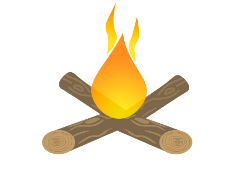

Steady heat
Even size and density help you hold a consistent cooking temperature.

CHARCOAL BRIQUETTESby Moto Kuni SolutionsCharcoal Briquettes for Sale
Buy charcoal briquettes from Moto Kuni Solutions: made for steady heat and easy use, for families, restaurants, hotels and bulk buyers across Kenya.
Briquettes are pressed to a uniform shape, so they light, burn and store more predictably than loose charcoal.
Even size and density help you hold a consistent cooking temperature.
Uniform pieces pack neatly, stack well and are simple to measure out.
A more comfortable fire for the cook and for the people around it.
Dense briquettes are made to last, so you buy less often.
Not sure which charcoal to buy? Here is how briquettes compare with loose lump charcoal.
| Charcoal briquettes | Lump charcoal | |
|---|---|---|
| Shape and size | Uniform | Irregular pieces |
| Burning | Steady and predictable | Varies from piece to piece |
| Measuring and storing | Easy to measure and stack | Harder to measure and pack |
| Best for | Home cooking, BBQ, jikos, restaurants | Quick, hot fires |
Buy briquettes by the pack, sack or in bulk. Prices depend on pack size and quantity, so message us for today's briquettes price per kg, per sack or for wholesale.
[ 2 kg / 5 kg – add your sizes ]
For home cooking and weekend barbecues.
Ask for price[ 25 kg / 50 kg – add your sizes ]
For regular users, small eateries and shared households.
Ask for price[ minimum order – add yours ]
For restaurants, hotels, resellers and institutions.
Get a bulk quoteReliable briquettes for everyday cooking on your jiko or charcoal stove.
Steady heat for barbecues, grills and weekend gatherings.
Consistent supply and quality for busy kitchens.
Briquettes wholesale: talk to us about regular supply and volume pricing.
Charcoal briquettes are fuel pressed into a uniform shape from combustible materials. Ours are made from materials such as charcoal dust, wood waste, coconut shells and rice husks. They are used for cooking, barbecues and jikos.
Lump charcoal is made of irregular pieces, while briquettes are pressed to a consistent size and shape. That uniform shape makes briquettes easier to measure, stack and store, and helps them burn more steadily.
Yes, when used properly. Like all charcoal, briquettes release carbon monoxide as they burn, so use them outdoors or in a well-ventilated space and never in a closed room.
Place the briquettes in your jiko, stove or grill, light them with a fire lighter or kindling, and let them burn until they are covered with grey ash before you start cooking. Keep the area ventilated.
The briquettes price depends on pack size and quantity. Message us on WhatsApp for today's price per kg, per sack or for a wholesale order.
Order from Moto Kuni Solutions on WhatsApp or by phone on 0780 708 415. [Add your delivery areas here.]
Yes. Restaurants, hotels, resellers and institutions can message or call us with the quantity they need and we will send a quote.
[Add your payment methods, for example M-Pesa, bank transfer or cash on delivery.]
Moto Kuni Solutions also supplies firewood, logs, sawdust and modern jikos. Fire lighters and more charcoal products are coming to our site soon.